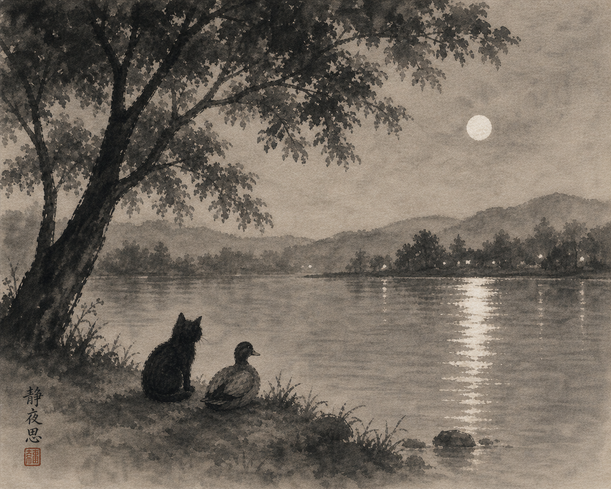

Whose Plan?
Suffering, and what remains when explanation falls away.
They sat by the edge of a lake, beneath the wide canopy of an old tree. The water moved gently, catching the last of the light. Kitty kept her tail wrapped tight around her paws. She had been quiet for a while, working something over. Duck didn’t interrupt.
"I keep coming back to it," she said. "If there is a god... why does he allow innocent suffering? Why would a newborn be left to starve? And don’t tell me it’s part of some plan. That we’re not supposed to understand it."
She let out a breath and shook her head. "That never sat right with me. If we can’t understand, what are we really saying? That it’s justified, but we’re not allowed to question it? Or that we’re supposed to just accept it and move on?"
A ripple moved across the surface of the water, spreading outward before disappearing. Duck shifted slightly, then looked out across the lake.
"It doesn’t feel abstract," he said. "A mother who loses her young doesn’t need an explanation. The feeling is just there. It clings. When something is clearly undeserved, no explanation makes it okay."
Kitty nodded slowly. "So what are we supposed to do with that?"
Duck adjusted his footing on the ground. "The mind wants an answer. It wants fairness. It wants cause and effect to line up."
"Yeah," Kitty said, letting out a small, humorless breath. "It really does. But that’s not what we see."
"No," Duck said, glancing at the water again. "Innocent creatures suffer. So if there is a god... whatever is happening here doesn’t follow the moral structure we expect."
Kitty stared out across the lake. "I still feel like I’m missing something. Like there’s an answer I’m supposed to find."
Duck didn’t look at her. "The mind wants something it can hold onto. Something that lets it rest. But there may not be an answer that satisfies it."
Kitty’s ears tilted back slightly. "That’s... not a great answer."
"No," Duck said. "It isn’t."
They sat in silence for a while.

A light breeze moved through the branches above them. The surface of the lake shifted, then settled again.
Duck broke the silence. "Different creatures come up with different ways of looking at it."
Kitty didn’t move, but her ears tilted slightly toward him.
"Some see a god that knows everything, can do anything, and cares deeply about what happens," he said. "A god that sets the rules, watches how things unfold, and judges. Rewards some. Condemns others."
Kitty’s tail tightened slightly. "And suffering?"
"It’s explained as part of the plan," Duck said. "A test. A consequence. Or something beyond understanding. But it’s still allowed. Even when it doesn’t seem to fit the idea of care."
Kitty stared out across the water. "That’s the one I can’t reconcile."
"Yeah," Duck said quietly. "A god that could stop it, but doesn’t."
The wind picked up briefly, rustling the leaves above them.
"There are other views," Duck continued. "Some don’t see a god in control at all. More like something that leans on things. Nudges them. Tries to move everything toward something better, but can’t force it."
Kitty turned her head slightly. "So it wants things to go a certain way, but doesn’t have the power to make it happen?"
"Something like that," Duck said. "Suffering still happens. Not because it’s planned, but because the system doesn’t fully bend to that influence."
Kitty was quiet for a moment. "That feels... different. Less intentional."
"Less control," Duck said.
The lake had gone darker now, reflecting the sky.
"And then there are views where none of this is personal at all," he went on. "No intention. No preference. Just a kind of underlying reality everything comes out of."
Kitty’s ears lifted slightly. "No caring?"
"No caring. No not caring," Duck said. "It’s not a being in the way we think of it. More like the ground everything arises from."
Kitty let out a slow breath. "So suffering just... is."
Duck nodded. "Not chosen. Not judged. Not explained."
They sat with that for a moment.
Kitty looked down at her paws. "None of those really solve it."
"No," Duck said. "They just frame it differently."
She glanced back out at the lake. "One says it’s allowed. One says it can’t be stopped. One says there’s no one there to allow or stop anything."
Duck gave a small nod. "Yeah."
Another stretch of quiet settled in.
"And we’re still left with it," Kitty said.
"Yeah," Duck said.
The water moved again, barely visible now in the fading light.
Kitty spoke more quietly this time, as if testing the ground beneath the thought. "We don’t even know if any of those are right. If there is a god, we don’t know what it is, or what it wants, or if it even has wants. We make all these explanations, but we can’t actually verify any of them."
Duck remained still, looking out across the lake.
"They might all be wrong," Kitty went on. "Or partly right. But there’s no way to check. So we keep asking why... but we’re asking something we can’t really answer."
A breeze moved through the branches above them, and the surface of the lake shifted, then settled again.
Duck gave a small nod. "And the more we build around that question, the more we lean on something we can’t see or test. It pulls us away from what’s actually happening."
Kitty turned that over. "So we push the responsibility somewhere else."
"Yeah," Duck said. "Onto something we can’t question. And while we’re doing that, the suffering is still here."
The words hung there for a moment.
"It doesn’t go away because we explain it," he continued. "Or justify it. Or call it part of something bigger. It’s still there, whether we can make sense of it or not."
Kitty’s tail loosened slightly as she watched the darkening water, her reflection fading with the light.
"So maybe that’s not the right question," she said after a while. "If we can’t know whether there’s a god, or what its nature is, then building everything around that doesn’t really help. It just keeps us circling."
Duck shifted slightly. "Then the question changes."
Kitty nodded slowly. "Yeah. Not whose plan it is. Not why it’s allowed."
She paused, then said it more clearly.
"What do we do with suffering?"
The lake had gone almost still now, the surface flattening into a dark, quiet sheet.
"We can’t control most of what happens," Duck said. "But we can see what we add to it. The thoughts, the stories, the resistance... the way we turn one moment into something bigger than it is."
Kitty let out a slow breath. "Stacking it."
"Yeah."
They sat with that for a while.
"So instead of trying to solve something we can’t know," Kitty said, "we work with what we can see. What’s actually here."
Duck nodded once.
"And that doesn’t mean ignoring it," she added. "Or pretending it’s okay."
"No," Duck said. "It means meeting it without adding more than is already there."
The last light slipped off the surface of the lake, leaving only a faint line where water met shore.
After a long pause, Kitty asked, "What about when it’s someone else suffering?"
Duck took his time before answering. "You don’t hand it off to a story. You don’t try to fix it or explain it away. You stay with them. You don't take it over. Just be there."
Kitty nodded quietly.
The air had cooled, and the tree above them had gone still.
After a while she said, "Maybe that’s it. Not whose plan it is."
Duck didn’t move.
"But how we meet what happens."
A long silence followed, the kind that didn’t feel empty.
Then Duck, still looking out across the lake, said softly, "Yeah."